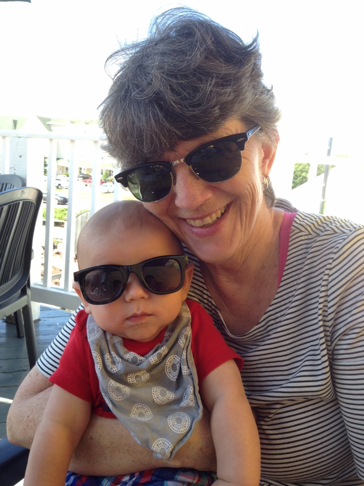
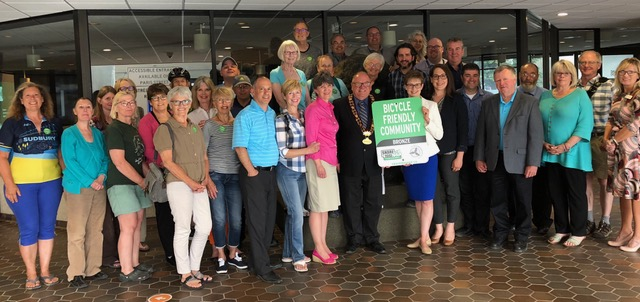

As the current Ward 9 city councillor, Deb McIntosh has demonstrated over the past four years that she works effectively with residents, business and community groups, and all levels of government to get things done.
Deb extended the fiscal responsibility and high achievement level she demonstrated during her career in Sudbury as an accountant, community volunteer and Executive Director of Rainbow Routes Association into her work as a councillor.
Since 2014, Ward 9 residents have appreciated Deb’s ability to listen to their concerns, help them come up with new and alternative approaches to projects or concerns, and be the first to pitch in to make things happen.
Deb is committed to using her experience on city council to work for Ward 9. She will continue to be responsive to the ward’s needs and interests. At the same time, Deb will put her energy and critical thinking skills into collaborating on projects that will benefit the city as a whole.
Deb capably demonstrated her ability to identify and troubleshoot critical issues as chair of:
Planning Committee
Audit Committee
and as a member of:
City Council
Finance and Administration Committee
Greater Sudbury Economic Development Board
Downtown Business Improvement Association (2014-16)
Sustainable Mobility Advisory panel
Newcomer Immigration Refugee Advisory panel
Nickel District Conservation Authority board (2014-16)
Hiring committee for the City’s Chief Administrative Officer
One of the best things about being a city councillor is getting to know and work with the people in Ward 9. It is very gratifying to have worked together on community issues and projects, and I am motivated to continuing that work for another term.
Deb
A resident of Ward 9 for 25 years, Deb is married to retired music educator Ralph McIntosh. Deb trained to become an accountant but more importantly Deb is by nature a caring mom, grandmother, daughter and friend to many. She also hopes to include a Labrador retriever in her family circle at some point in her future.

Priorities
Our community -- Our future
Deb's pledge to Ward 9: 2018-2022
When Deb ran for the Ward 9 council seat in 2014, she made three promises and laid out a four-part platform that would inform her decision making over the term of council.
She promised to work hard, not touch or influence the Healthy Community Initiative (HCI) funds and to vote according to the direction of the Ward 9 voters regarding shopping hours. Following her election, Deb kept these promises, and has worked tirelessly and collaboratively with many constituents and local businesses to improve the quality of life in Ward 9 and the City of Greater Sudbury.
For the next term of council, armed with the knowledge gained over the past four years, Deb promises to continue to work hard and make decisions based on a similar platform: fostering economic growth, protecting water, championing smart transportation and demonstrating good governance.
Fostering Growth in Greater Sudbury’s Economy
Deb has been instrumental in organizing the sale of Long Lake Public School, sits on the Leadership Council for the park and regularly attends events at the park. Her determination and willingness to persevere is inspiring; working along side Councillor McIntosh and having her represent Kivi Park is such an honour. Kivi Park wouldn’t be where it is today without her support and love for the outdoors. Deb strives to make the City of Greater Sudbury greater for all residents and visitors alike.
Melissa Sheridan, Kivi Park Leader
Ward 9/City Priorities: 2018-22
Improve the look and functionality of the Regent St/Four Corners gateway to our city.
Continue to explore and enter into partnerships and cost-sharing agreements for improved city services that enable economic growth and new jobs.
Support the growth of existing local business while championing opportunities for new business.
Leverage connections between the city’s many institutions, private business, community leaders, and other levels of government to broaden Greater Sudbury’s capacity.
Leverage and promote our northern lifestyle and natural assets to attract tourists, businesses and families.
Make our city more attractive to youth and immigrants through inclusion and diversity.
Leading by example, the City will adapt new and emerging technologies.
Ward 9 action highlights: 2014-2018
Created new economic opportunities by working with Fielding Foundation and Long Lake community to facilitate the development of Kivi Park as a world class 450-acre sports and outdoor-activity destination.
With the city and private entities, met a Coniston growth priority by upgrading water mains and entering into cost sharing agreements with private entities to improve fire flow and permit buildings over two stories.
Collaborating with Lopes Limited and the Coniston community, helped make Coniston more family friendly by expediting a splash pad installation.
Worked with the Wahnapitae community on projects including upgrades to the Wahnapitae Community Centre and installation of a new playground.
Deb was an absolutely outstanding champion throughout on the Coniston Splash Pad project. Her unwavering commitment and support were in great part responsible for this project happening. She is a true community leader and was a tireless supporter throughout.
Felix Lopes Jr, Lopes Limited
Greater Sudbury action highlights: 2014-2018
Deb worked in collaboration with council and a variety of project partners to:
Increase productivity for businesses by advocating for access to faster broadband internet service across rural areas of Greater Sudbury.
Promote Sudbury’s world-famous re-greening expertise by partnering with provincial and federal governments to sponsor the Sudbury Protocol Conference.
Create jobs and economic spinoff through a northern Ontario mining supercluster by supporting an application for a federal government funding competition (Sudbury-led application made the short list).
Introduce a motion to make changes to the Taxi bylaw to enable rideshare companies eg. Uber and our local cab companies to compete on a level playing field.
Worked on Indigenous Economic Development partnership opportunities through a subcommittee of the Greater Sudbury Economic Development Corp.
Smart Transportation Connects our Community
Greater Sudbury received this award (Bicycle Friendly Community Award) because while there are still many opportunities for improvements to the cycling network, the review panel felt that the city’s commitment to making cycling safer, the strong partnerships that have been created within the community and the rapid pace at which Greater Sudbury has become more bicycle friendly are certainly worthy of recognition.
Share the Road Cycling Coalition 2018
Ward 9/City Priorities: 2018-22
Roadways: The community is asking the municipality to “fix the roads.” We will continue our road investments while balancing the needs of all road users.
Public Transit: We will act on our Transit Action Plan and roll out an effective transit system which will improve access to employment opportunities, community resources, recreational activities and medical care.
Walking and Cycling: Building on the successes of the last four years, more children will be able to walk or cycle to school or a playground; more older adults will be able to walk to shopping or a bus stop.
Ward 9 action highlights: 2014-18
Installed edgelines on newly resurfaced Algonquin Road for safer cycling and traffic calming (2018).
Sought solutions at community meetings to reduce speeds on residential roadways through education, engineering and enforcement.
Worked to eliminate frequent road closures on a section of Highway 537 at Jumbo Creek due to flooding, by lobbying the Ontario Ministry of Transportation to improve this section. MTO has begun this work.
Increased road safety by advocating for a MTO speed study of Highway 17 between Wahnapitae and Coniston. Completed study resulted in reduced speed limits on a section of the highway.
Tabled a motion to increase the gravel road maintenance budget by $600,000 per year. The increase is to be reflected in the 2019 Budget.
Successfully lobbied for the replacement of Allan Road pedestrian bridge in Coniston.
Greater Sudbury action highlights: 2014-2018
Deb worked in collaboration with council and a variety of project partners to:
Provide for residents’ long-term transit needs by creating a Transit Action Plan for Greater Sudbury.
Increase pedestrian safety by installing 41 pedestrian crossovers throughout Greater Sudbury.
Make cycling safer and more convenient by championing allocation of $800,000 annually to improve cycling infrastructure [13 km of new cycling infrastructure in 2017).
Make it easier for transit riders to check their routes by ensuring the installation of maps and wayfinding in the transit terminal and key bus stops.
Develop policies: Complete Street Policy, Transportation Demand Management, Sidewalk Priority Index, Transportation Master Plan, Official Plan Review.
Increase funding for snow removal on 26 additional km of sidewalk and at 100 additional bus stops.
Earn a Bicycle Friendly Community award in 2018 from the Share the Road Cycling Coalition.

Water Quality: Yes, We are Living with Our Lakes
Deb is a strong supporter of the power of the vision of 'Sudbury - The City of Lakes.'
Dr. John Gunn, Living with Lakes Centre
Ward 9/City Priorities: 2018-22
Water is one of our greatest resources; we will continue to be proactive in protecting our lakes and rivers, working with Conservation Sudbury, Laurentian University’s Living with Lakes Centre, the Greater Sudbury Watershed Alliance and its associated groups as well as the people who live near our waterways.
Finalize and initiate the implementation of the Depot Master Plan, especially the salt and sand storage facilities, to protect our water.
Continue to conduct watershed studies.
Continue to protect our drinking water by making investments in our water/waste water treatment systems and replacing old water mains and sewers.
Ward 9 action highlights: 2014-18
Supported McFarlane/Richard Lake/Long Lake residents’ concerns about risks to water quality during multiple re-zoning applications.
Worked with the many lake stewardship groups working in Ward 9: Clearwater, Long, McFarlane, Richard, St. Charles to respond to immediate and long-term concerns.
Tabled a motion on behalf of the Greater Sudbury Watershed Alliance to have the City submit a letter of support for the Eurasian Water Milfoil Pilot project application to the Ministry of Natural Resources.
Greater Sudbury action highlights: 2014-18
Deb worked in collaboration with a variety of project partners to:
Protect city lakes by advocating changes to the City’s Official Plan regarding waterfront development in Section 8.4.1 of the Official Plan to ensure the maintenance of vegetative buffers along shorelines.
Reduce erosion, prevent flooding and improve the quality of the city’s lakes by supporting studies of the area’s watersheds.
Protect groundwater by instigating an inventory of all municipally owned septic systems, and development of a maintenance plan.
Fiscal Responsibility + Accountability + Transparency = Good Governance
We believe that the city exhibited broad political consensus on fiscal policies since the past election, specifically those aimed at implementing an asset management policy and addressing its large infrastructure deficit. We expect that the city's political and managerial strength will remain intact following the 2018 elections, enabling Sudbury to continue its effective operating revenue and cost management.
Standard and Poor’s Global Rating, June 18, 2018
Ward 9/City Priorities: 2018-22
Municipal governance structure review: It’s been 18 years since amalgamation and it is time to review what is working and what isn’t.
Continue to employ fiscal responsibility and business skills at the council table: We will make the best use of resources and balance the city’s budget.
Service Level Reviews: We will review how and what services the municipality provides.
Find sustainable solutions that address the maintenance and replacement of key infrastructure.
Maintain an Auditor General office and an Integrity Commissioner that keep the municipality and Council accountable and fiscally transparent.
As part of the City’s Open Public Data policy we will continue to make data sets and information available to support citizens and community groups and to enhance economic opportunities
Building on Council’s Strategic Plan accomplishments, we will develop a new four- year Strategic Plan and annually measure our progress toward our goals.
Ward 9 action highlights: 2014-18
Approved new, accountable Healthy Community Initiative (HCI) fund policy which provided approval criteria to be managed by City staff.
Greater Sudbury action highlights: 2014-18
Deb worked in collaboration with a variety of project partners to:
Reduce waste collection costs and environmental impacts by presenting a motion to change garbage bag limits and collection frequency over five years (2016-2021) while maintaining unlimited weekly blue box and green cart pick up.
Help individuals, organizations and businesses be more effective by introducing an Open Data policy whereby municipal data is easily available and free of charge.
Safeguard our greatest resource by supporting the recommendation of KPMG for annual increases to the city’s water/waste water budget to fund repair and replacement of aging water infrastructure (water mains and sewers).
Provide councillors and members of the public with more time to become informed and prepare for City meetings by instigating a longer lead time between the release of a meeting agenda/reports and the meeting.
You helped me put a curb in front of my house when the builder I bought from said he would and then didn’t. The city wanted $1200 from me. I contacted you and within a month I got a curb put in at the home builder’s cost. I cannot thank you enough for your help with that! Got my vote!